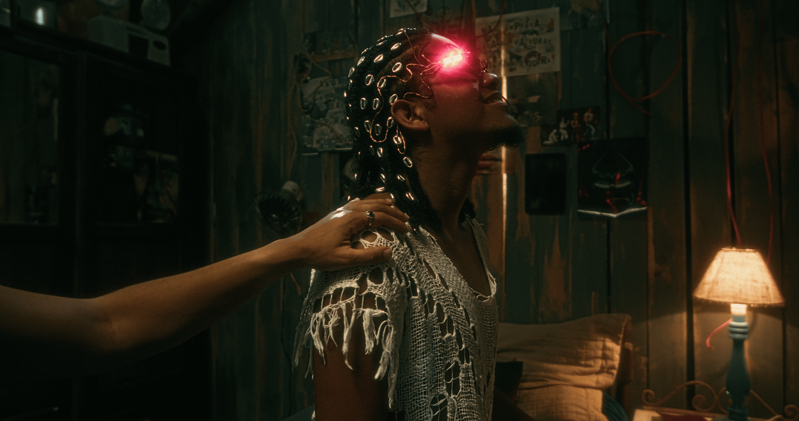
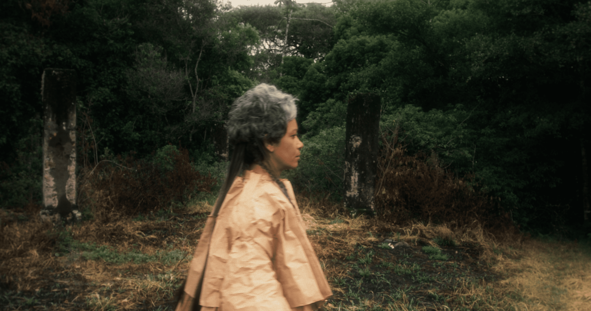
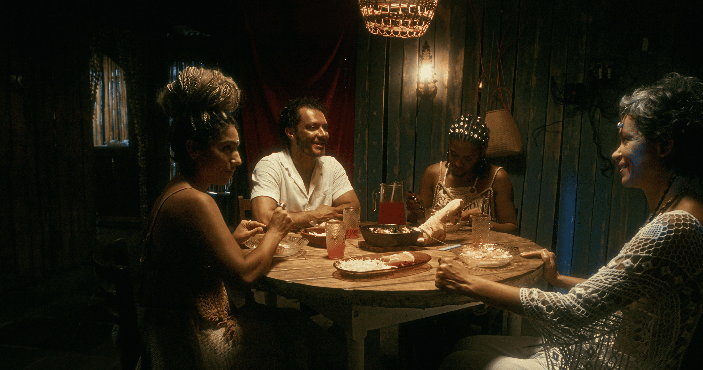
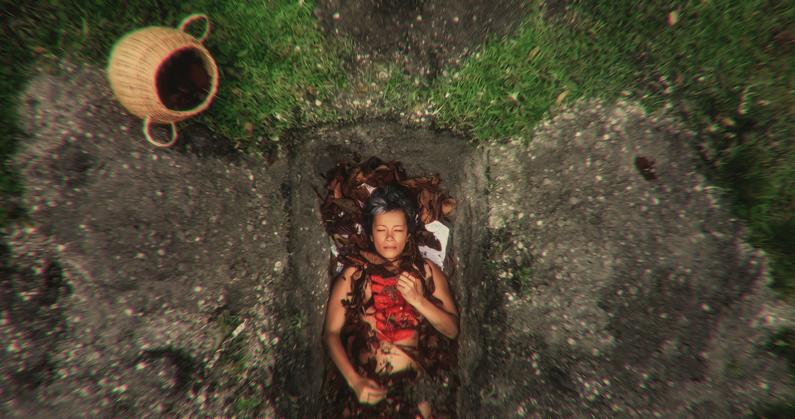
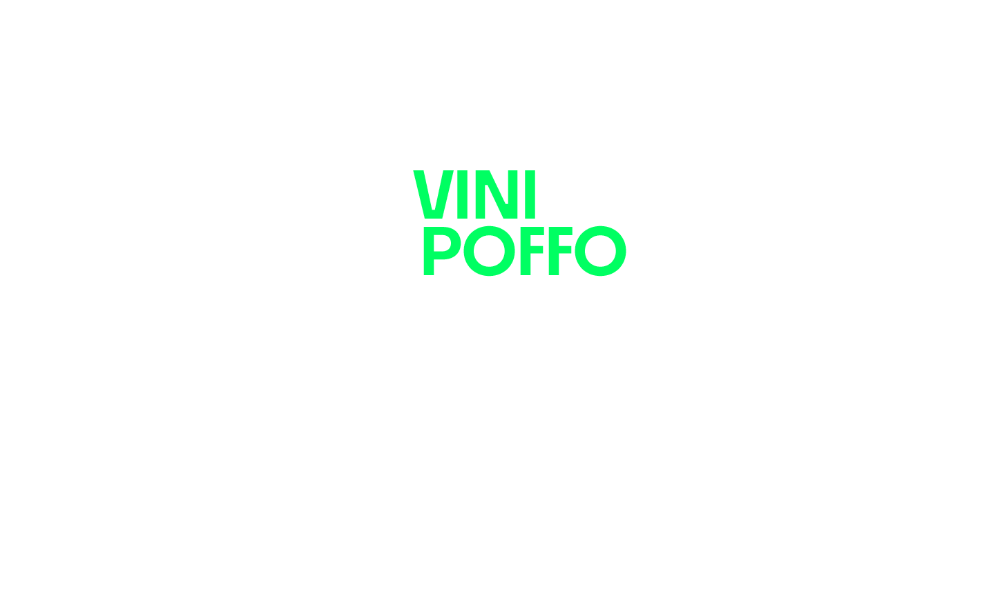
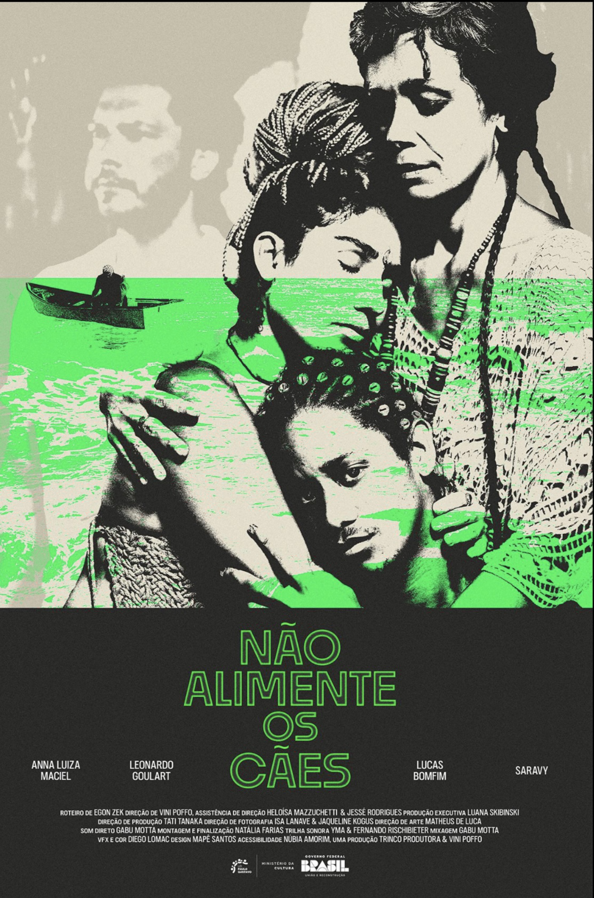

Sinopse
Num futuro próximo, em uma vila quase deserta à beira-mar, uma família sobrevive da pesca, do artesanato e de uma persistente ânsia de viver. Uma luz vibrante surge no horizonte, como se tentasse lhes dizer algo.Foto Stills






O mar não é apenas paisagem — ele pede alguma coisa.
Nota da Direção
Não Alimente os Cães nasce desse incômodo e do desejo de filmar a família como um território de tensões, cuidado e sobrevivência. As personagens não têm nomes porque o interesse está em olhar para esses papéis que muitas pessoas já habitaram: o pai que sustenta, a mãe que é vínculo, os filhos que tentam existir à sua própria maneira.
A luz que surge do mar, ela provoca escuta, dúvida, movimento. O filme se interessa em construir e observar os gestos, os silêncios e as ausências, e que permaneça no corpo de quem assiste como uma pergunta aberta…
— Vini Poffo

Vini Poffo é cineasta, responsável pela direção criativa e artista. Seu trabalho transita entre cinema e videoclipes, com uma abordagem artesanal, simbólica e política, criando imagens atravessadas por afeto, memória e território. Foi premiada pela Funarte no Prêmio RespirArte e soma mais de sete prêmios em festivais, incluindo Direção Revelação e Melhor Filme. Seus filmes já foram exibidos em mais de 60 festivais no Brasil e no exterior. No campo do videoclipe, teve trabalhos selecionados no MVF e premiados como Melhor Videoclipe no Festival de Cinema de Brasília. Em 2026, lança seu mais recente filme, Não Alimente os Cães.
Pôsteres



Elenco
Equipe Técnica
Ficha Técnica
Contato & Imprensa
projetos@vinipoffo.com